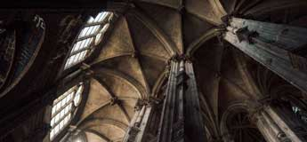
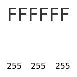
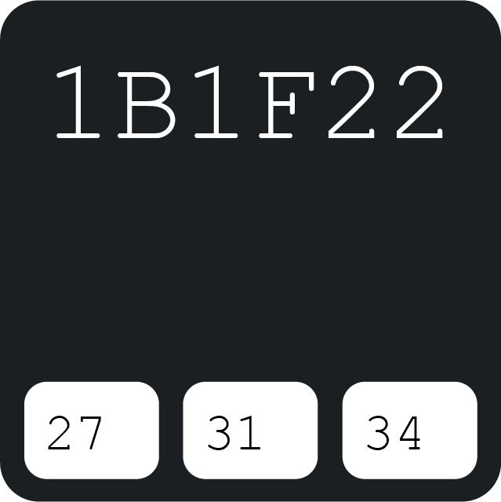
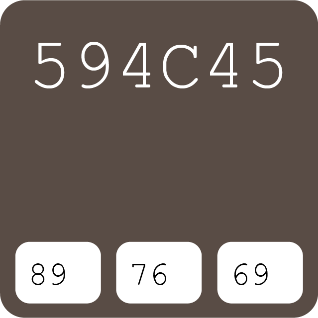
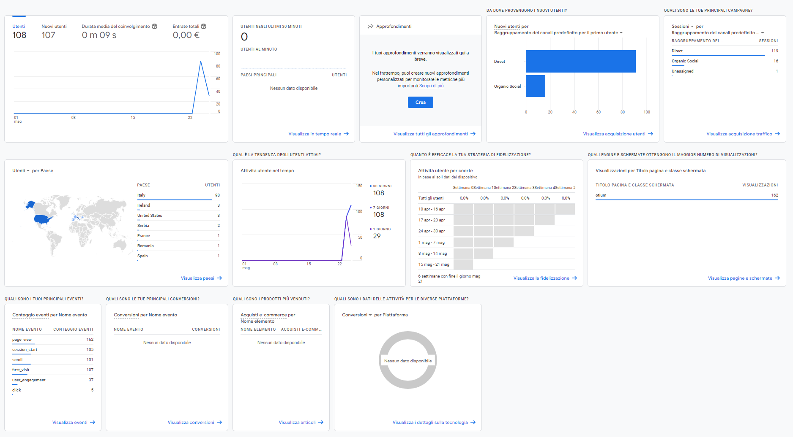

Intro
Come studente, capisco quanto sia difficile sedersi alla scrivania e concentrarsi, soprattutto quando devi selezionare la musica e ti ritrovi a dover scegliere tra diverse piattaforme con infinite librerie di playlist e brani.
Ti priva di parecchio tempo.
Nasce per questo motivo Otium, un modo per aiutarti a risolvere questo problema e avere finalmente uno spazio musicale personale e tranquillo per abbracciare le attività più nobili dell'otium dei latini: lavorare, studiare o semplicemente rilassarti.
Con una selezione musicale sempre aggiornata, strettamente legata a questa subcultura estetica interessata all'istruzione superiore, alla scrittura/poesia, alle arti e all'architettura classica, greca e gotica.
D’altronde, per immergersi completamente nelle atmosfere che la caratterizzano ed entrare nel mood di quella idealizzazione romanticizzata della vita, è necessario il giusto accompagnamento sonoro.
La corsa al domani prende così tutta un'altra piega: che sia una bolla evanescente o la traccia concreta di un nuovo fare, ciò a cui punto è fornire una piattaforma musicale di riferimento per tutti coloro che si rispecchiano in questo stile di vita in cui la cultura è l'unica tendenza da seguire.
Dark Academia

Il sound delle playlist dell'estetica Dark è principalmete composta da musica classica di ampio respiro, tipicamente caratterizzata da toni più romantici, malinconici, epici o severi, suonata in tonalità minori, con pianoforte e archi.
Estremamente popolare in questa estetica è anche la musica alternativa contemporanea, con un'ampia varietà di strumentazione e alcune caratteristiche comuni alla musica classica: l'uso di archi o pianoforte, bassi lenti e profondi, cori o voci echeggianti; il tempo tende ad essere più lento e ha un tono più malinconico e contemplativo.
Light Academia
Il sound delle playlist dell'estetica Light, come per la Dark Academia, ha forti radici visive nel Post-Punk, in particolare in riferimento al lato più leggero del genere che ha lasciato il posto all'indie rock, al dream pop e allo shoegaze.
Contact Us
Contattaci per suggerire nuove playlist o canzoni
Copyrights e i diritti di proprietà
intellettuale di Spotify
In vigore dal: 12 February 2013
Grazie per aver visitato la pagina sui Copyrights e i diritti di proprietà intellettuale di Spotify.
Spotify rispetta i diritti di proprietà intellettuale di terzi e chiede ai suoi utenti di fare lo
stesso.
Se sei titolare di un diritto di Copyright, o un agente, e ritieni che una parte del materiale protetto
da tale Copyright e disponibile attraverso il servizio di Spotify, violi il tuo lavoro, ti preghiamo di
comunicarcelo.
Utilizzare questo modulo Web per inviare
comunicazioni relative a presunte violazioni di copyright. In alternativa, le comunicazioni relative a
eventuali violazioni di copyright potranno essere inviate all'agente designato da Spotify all'indirizzo
riportato di seguito:
Spotify USA Inc.
Attn: Legal Department, Copyright Agent
4 World Trade Center, 150 Greenwich Street, 62nd Floor, New York, NY 10007
infringement-claim@spotify.com
Si prega di inserire quanti più dettagli possibili per consentirci di identificare i fatti o le
circostanze, inclusi, dove possibile:
Una firma autografa o elettronica del titolare (o della persona autorizzata ad agire per suo
conto) del Copyright che si presume violato;
Indicazione specifica di ogni opera protetta da diritto d'autore che si ritiene violata;
Indicazione del materiale che si ritiene violi il Copyright e dove esso sia situato, sui Servizi
o sui Siti Spotify (per maggiore precisione, si prega di voler fornire l'URL che possa aiutarci a
localizzare il materiale che si segnala);
Contatti della parte reclamante, nome completo, indirizzo, numero di telefono e indirizzo
email;
Una dichiarazione della parte reclamante in cui, in buona fede, afferma che l'utilizzo dell'opera
non è stato autorizzato dal titolare, né da persona autorizzata ad agire per suo conto e neppure
dalla legge;
Una dichiarazione in cui si conferma che le informazioni contenute nella comunicazione sono
esatte e che lo scrivente è il proprietario del Copyright che si ritiene leso (o una persona
autorizzata ad agire per suo conto).
Ti informiamo inoltre che Spotify eliminerà, ove sia il caso, gli account dei trasgressori recidivi.
Copyright © 2012 Spotify AB. Tutti i diritti riservati.
Spotify AB
Regeringsgatan 19, SE-111 53 Stockholm
Sweden
SE556703748501
Documentazione
Abstract
Il progetto prevede la creazione di un sito web nel quale gli utenti che vi fanno utilizzo, possono usufruire di una piattaforma con una selezione musicale sempre aggiornata e strettamente legata al sound della subcultura dell’estetica accademica. Attraverso il menù di navigazione gli utenti possono decidere tra quale dei due stili, predominanti di questa subcultura, rispecchi maggiormente il loro stile, spirito e/o mood e ascoltarne le playlist selezionate.
Project Manager Plan
1. Benchmarking
1.1 Obiettivi.
Si tratta di un progetto che punta a raggiungere due obiettivi specifici ovvero, la creazione di uno spazio musicale personale e tranquillo che sia un riferimento per tutte quelle persone che si rispecchiano in questa estetica, e la creazione di una piattaforma che sia la soluzione al problema di una società in cui i contenuti sono infiniti e illimitati tanto da trascinare l’utente in una turbinio di insoddisfazione delle proprie aspettative musicali.
1.2 Target utente.
Il target utente primario di riferimento è quello della Generazione Z, si tratta di ragazze e ragazzi di età compresa tra i 14 e i 21 anni, interessati all’ambito musicale ma nello specifico ad una subcultura di essa ovvero l’estetica accademica.
1.3 Competitors.
Non essendo presenti nel web piattaforme che presentassero la stessa offerta tematica del progetto Otium, i competitors presi in considerazione sono piattaforme che offrono un servizio simile ma con tematica e su un target utente differente.
Si tratta di due siti web che offrono una varietà di playlist sul sound Lo-fi (Low Fidelity):
L’obiettivo e le strutture dei siti sono molto simili alla mia questo perché alla base vi è un intento comune, ovvero quello di realizzare uno spazio musicale in cui il nostro target si senta comodo.
Sono stati selezionati quasi gli stessi elementi: una selezione dedicata all’intro in cui viene spiegato cosa tratta il sito web, due sezioni dedicate ai brani e infine una sezione dedicata ai contatti.
2. Struttura e layout
2.1 Architettura del sito.

2.2 Wireframe.
Home wireframe

Intro wireframe

Dark/Light Academia wireframe

Contact Us wireframe

2.3 Look and Feel.
Il Progetto, prevedendo la realizzazione di una piattaforma di riproduzione musicale su tema, necessita l’ideazione di una grafica che risulti visivamente coerente con lo stile tematico della subcultura scelta e allo stesso tempo comunicativo dell’ambito musicale.
I caratteri generali della grafica sono stati basati sulla concezione che le interfacce siano sviluppate per servire l’utente, prevedendo i suoi bisogni e guidandolo nell’utilizzo della piattaforma attraverso la sua facilità di navigazione e comprensione dei contenuti.
L’obbiettivo perseguito per tale realizzazione è stato quello di puntare a rendere la partitura grafico-visiva della schermata comunicativamente efficace e visivamente bilanciata.
Per tale motivo, il posizionamento degli elementi nella pagina è di tipo logico-verticale, nella home del sito è possibile vedere come nella parte alta del corpo della pagina vi sia in grande il logo del sito (Otium) al di sotto del quale vi è una piccolo paragrafo d’introduzione alla piattaforma che ne spiega la funzione, al di sotto di questo vi è il menù di navigazione concentrato in questa posizione con il fine di bilanciare al meglio il “peso” dell’interfaccia.
In merito alla barra di navigazione, questa è esclusivamente concepita con componenti testuali che indicano quale contenuto della pagina si andrà a visualizzare intraprendendo quel tipo di percorso durante la navigazione.
Relativamente alle componenti testuali presenti nelle diverse pagine dell’interfaccia, per una chiara fruibilità di queste, le schermate sono state organizzate usufruendo di finestre modali a sfondo monocromatico (Codice Colore Hex: #594c45) per aumentare la leggibilità testuale e facendo un uso consapevole dei margini e degli spazi, mirando ad ottenere una buona armonia tra questi.
Riguardo invece al font utilizzato, per tutte le parti testuali della piattaforma, è stato applicato il Source Sans Pro appartenente alla famiglia Sans-Serif nel colore bianco (Codice Colore Hex: #FFFFFF).
Per quanto riguarda la palette colori, è stato stabilito un numero ristretto di questi per caratterizzare la grafica; per le parti testuali e le icon, come detto precedentemente, è stato utilizzato “white” (Codice Colore Hex: #FFFFFF, con giochi di trasparenze per le icone e le azioni) mentre per il back-ground delle finestre modali è stato utilizzato come sopraindicato un marroncino con una sfumatura medio-scura di arancio (Codice Colore Hex: #594c45) e infine per le ombre è stato utilizzato un grigio con una sfumatura molto scura di blu-turchese (Codice Colore Hex: #594c45)



Per aggiunta alla grafica dell’interfaccia sono state fornite le direttive per il Responsive, ovvero la capacità del sistema di adattarsi a quasi tutti i device e i loro rispettivi formati. Questo è stato possibile attraverso la creazione di un telaio, pensato per tutte le risoluzioni e tenendo conto di una serie di accorgimenti: per le risoluzioni più piccole, i contenuti e le immagini vengono ridimensionati a seconda della risoluzione del device che si sta utilizzando; l’utente così non deve procedere manualmente alla riduzione o all’ingrandimento dei contenuti.

3. Linguaggi e strumenti
3.1 Linguaggi web utilizzati
Per la realizzazione di Otium sono state utilizzate tecnologie client side (lato client) e server side (lato server) queste sono:
- Hypertext Markup Language (HTML) per strutturare il documento
- Cascading Style Sheets (CSS) per controllare l’aspetto del documento
- JavaScript (jQuery) per aggiungere interattività e comportamenti
3.2 Strumenti tecnologici utilizzati
- SublimeText2 come text editor;
- FontAwesome per le icone;
- Unsplash per le immagini;
- Adobe Illustrator per la realizzazione del logo;
- Adobe Photoshop per la realizzazione del mockup e la modifica delle foto;
- Encycolorpedia per la palette di colori;
- Template responsive Dimension di HTML5UP;
- Googlefont per il font;
- XMind per la realizzazione del diagramma ad albero per la struttura del sito;
- Wireframe.cc per la realizzazione del wireframe;
- Github per la pubblicazione;
- Google Analytics per il controllo delle visualizzazioni.
Communication Strategy
1. Background
Analizzando i siti web presi in considerazione come competitors, saltano agli occhi aspetti di negatività e positività.
L’unica criticità riscontrata riguarda l’aspetto della strategia comunicativa, ovvero la capacità del proprietario del sito di far conoscere la propria proposta nel web, in entrambi i siti è molto scarsa: partendo dal presupposto che si tratta di una proposta web per una nicchia di utenti e che quindi prende una fetta di interazioni limitata andrebbero spese maggiori attenzioni per la parte pubblicitaria e di condivisione del sito web.
Per quanto riguarda invece le positività, è giusto sottolineare l’ottima realizzazione di una spazio musicale tematico che rispecchia a pieno lo stile della subcoltura scelta; inoltre tutti e due i siti sono organizzati in modo chiaro e facilmente intuibili nonostante siano stati utilizzati stile e grafica dell’estetica Lo-fi che contrariamente ha, per definizione, uno stile “sporco”.
2. Obiettivi comunicativi
Con la realizzazione di questo sito si è puntato non solo alla realizzazione di una piattaforma musicale ad hoc per la nicchia di utenti appartenenti alla subcultura accademica ma soprattutto una piattaforma in cui gli utenti sentano soddisfatte le proprie scelte musicali, tentando di ridurre al minimo la possibilità di insoddisfazione a causa delle infinite possibilità tra piattaforme e tracce.
Per tale motivo il progetto ha come obiettivo principale il raggiungimento di più utenti, di nicchia e non, possibili in diverse parti del mondo.
3. Target audience e messaggio
Il sito si rivolge ad un target specifico non localizzato. Si tratta di ragazzi e ragazze tra i 14 e i 21 anni da tutte le parti del mondo, che nello specifico sono fruitori giornalieri dei social network (Instagram, TikTok, Tumblr, Pinterest).
Questa tipologia di utenti, non ché target principale del prodotto, è raggiungibile principalmente attraverso le stesse piattaforme social e/o attraverso il passaparola su blog e chat e la condivisione della pagina.
Non si riscontrano particolari barriere nel raggiungere il proprio obiettivo in quanto i social sono gli strumenti web principalmente utilizzati da questo target di utenti.
Il messaggio che si vuole trasmettere è la presenza in rete di una piattaforma che ti fornisca all’istante un servizio di streaming musicale sempre aggiornato e specifico su un tema sia dal punto di vista musicale che dal punto di vista visivo, in quanto appunto anche la grafica è stata pensata per rendere tale ambiente il più vicino possibile a questo target di utenti. In questo modo si punta a stimolare il target a condividere questa pagina web.
4. Promozione
La campagna promozionale e pubblicitaria del sito è avvenuta su diverse piattaforme social (Instagram e Facebook) e attraverso la condivisione del link a diversi contatti WhatsApp e il passaparola tra questi contatti e i propri.
5. Valutazione dei risultati
Per la valutazione della buona riuscita non sol del sito ma della compagna pubblicitaria mi sono avvalsa di Google Analytics per constatare gli accessi alla pagina dalla messa online del sito, ho potuto riscontrare numerose views sin dai primo giorni, ritenendo pienamente raggiunto l’obbiettivo minimo: ad oggi il sito è stato visitato da più di 160 utenti.

Inoltre mi sono avvalsa dell’utilizzo di post Facebook e Instagram come doppia verifica del raggiungimento del target primario, con una copertura media delle interazioni ai post.